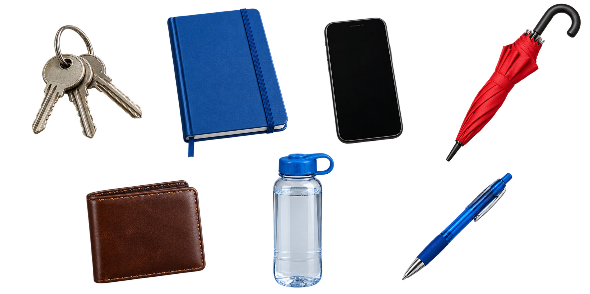

Vocabulary practice · 2A
Look inside my bag!
Identify things and play a memory game.
WORD BANK · Study first. Cover the word bank for memory games.
Personal items2A
- phone
- keys
- wallet
- notebook
- pen
- headphones
- bottle
- umbrella
Useful chunks
my phone · my keys · my headphones
my bag
Practice belowWhose things are on the table?2A
1Write Ida’s two things, Max’s thing and Luz’s thing.

Ida: My two things are blue. I use them to write.
Max: My thing is for the rain.
Luz: My thing is for money.
Ida:
Max:
Luz:
2Look for ten seconds, then cover the picture. Name the other three things. What is missing for music?
For music: h.